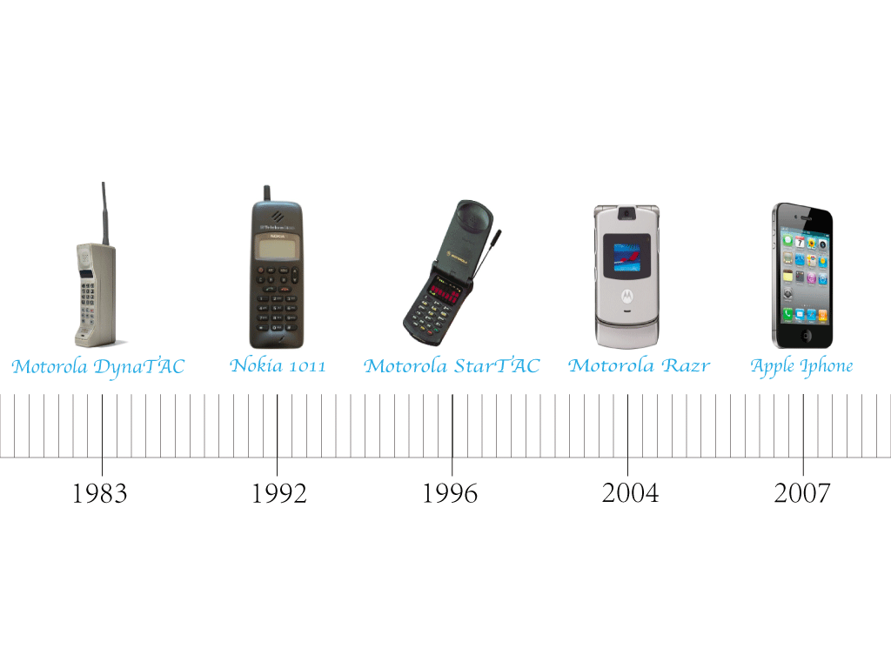
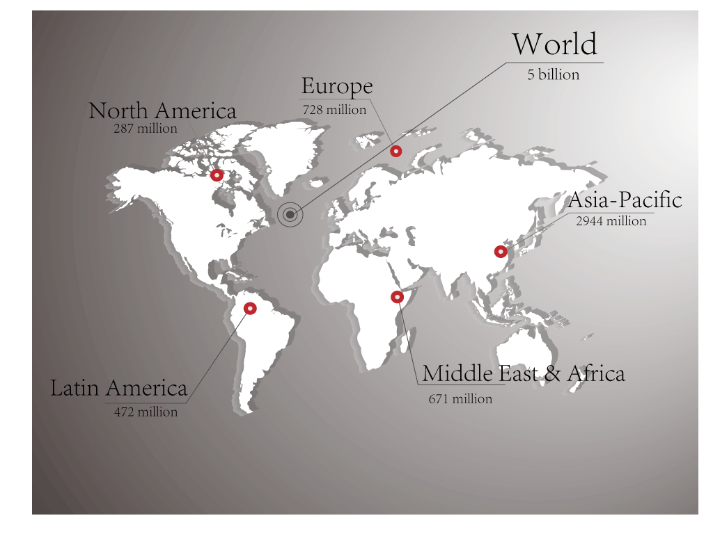
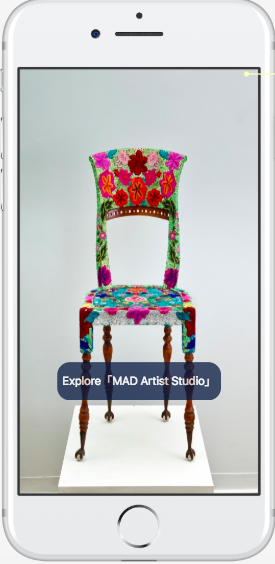
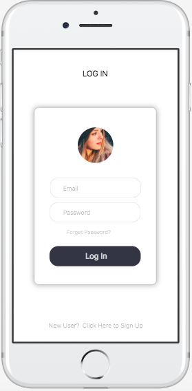
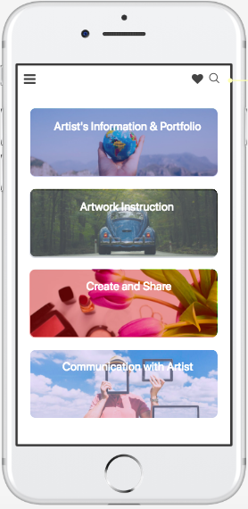
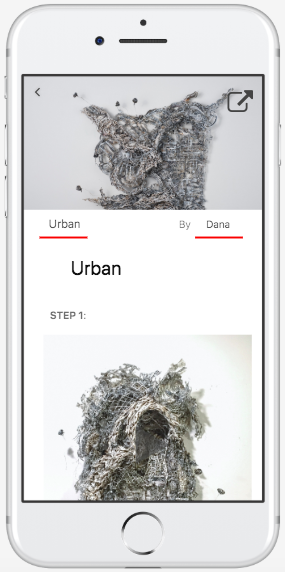
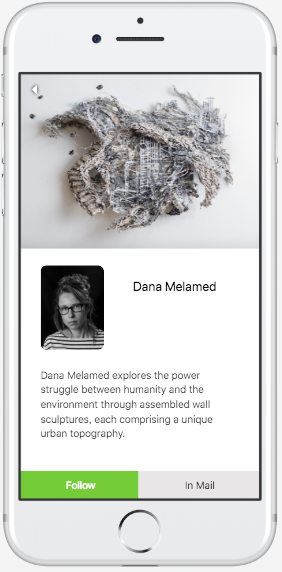
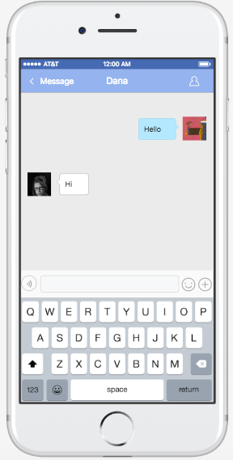

Technology
BY Ru Xu
Published May 15, 2018
(skill&tools: Adobe Illustrator)
Mobile technology experiences a short yet fast development in recent 30 years.
Development of Mobile Phone
Until 2017, the usage amount of mobile phone reached a new height.
the Usage amount of Mobile Phone in 2017
Under such circumstances, we are designing a supplementary mobile application named MAD4U. The target users are the visitors to the Museum of Arts and Design, locating in Manhattan, New York City. The Museum of Arts and Design collects and displays contemporary art pieces, innovative art crafts, and technological art designs. On the fourth floor, there is an artist's studio, where the museum hosts artists and designers to produce and create their art pieces in a live studio environment. our design works with the purpose of enhancing visitors’ experience both at the open studio and after the visit and promoting better interaction and artistic knowledge attainment in order to achieve the initial objective of the artist studio.
After the target audience downloads our mobile application, the welcome page and log-page would show up at first.
Welcom Page
Log Page
After users successfully log in, the home page appears with four sections: Artist’s information & portfolio, Artwork instruction, Create & share and Communication with an artist.
Home Page
For the artwork instruction section, the app provides specific steps and materials about how to make the artwork in the open art studio.
Instructional Guide
For the Artist’s information & portfolio section, you can see the specific information about the artist that you interested in, including what their focused area is, their design and education experience and other things they want you to know. The app also includes on-site photos and videos regarding artworks of the artist. If users want to receive the newest action about the artist, they can follow the artist or send in-mail messages to the artist.
Artist's Information
For the communication with artist section, if users have any questions or ideas they want to communicate with the artist within or after their learning process, they could send messages to the artist to get a specific instruction or answer.
Chat with Artists
